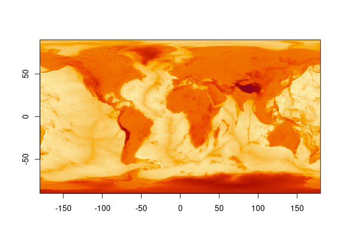

VERY VERY WIP
The goal of ximage is to make something like ‘image()’ and ‘rasterImage()’ but without the acquired need for compatibility with WTAF.
Example
This is a basic example which shows you how to solve a common problem:
## or, plot in the geographic space (we happen to know this for this matrix)
ximage(topo, extent = c(-180, 180, -90, 90), axes = F)
axis(1); axis(2);box()
ximage(logo_a) ## plot a RGB array
## plot a native raster over the other in a different window
ximage(logo_n, extent = c(10, 20, 20, 40), add = TRUE)
ximage(topo, extent = c(40, 60, 80, 100), add = TRUE, col = hcl.colors(256))
Code of Conduct
Please note that the ximage project is released with a Contributor Code of Conduct. By contributing to this project, you agree to abide by its terms.